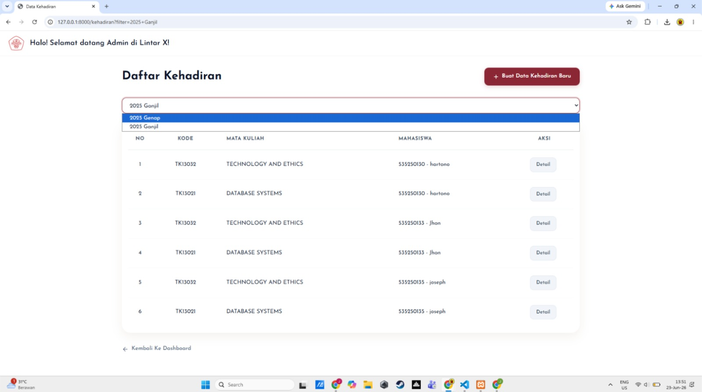
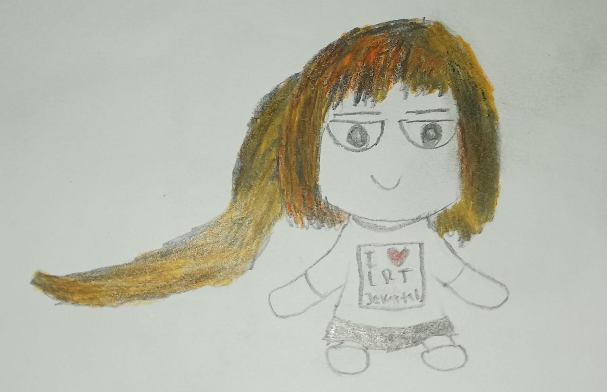
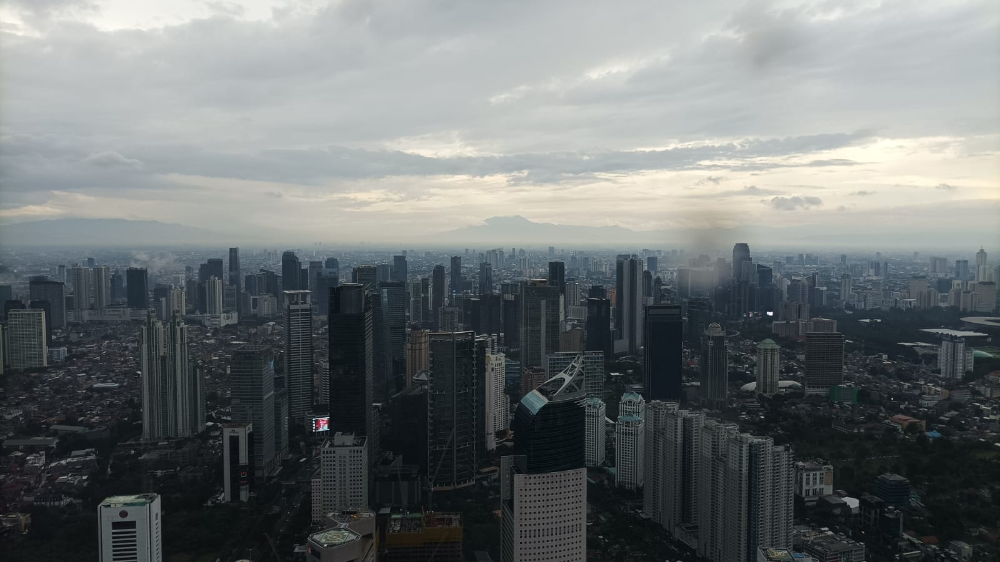

Terampil di berbagai bahasa pemrograman seperti Python, C++, Java, PHP, dan JavaScript. Memiliki soft skills berupa komunikasi, problem solving, dan bekerja sama dalam tim. Berbahasa Indonesia dan Inggris.
Anggota TEC pada tahun 2025. Menjadi panitia pada acara COMBO 2026, yaitu kegiatan bonding dan company visit, sebagai anggota bagian perlengkapan
Menjadi panitia dalam acara welcoming party fakultas untuk mahasiswa baru sebagai guardian, yaitu bidang security yang mengawasi agar acara dapat berjalan dengan lancar
Mengikuti kegiatan marketing di SMAK 6 Penabur untuk mempromosikan UNTAR pada acara Education Fair di tanggal 28 Agustus 2026. Mendapatkan pengalaman dalam berkomunikasi dengan banyak orang
Mengatur, menyambut, dan membantu jemaat setiap hari Minggu. Meningkatkan kedisiplinan dan kemampuan berkomunikasi, serta keaktifan rohani

Membuat website replikasi LINTAR dengan Laravel PHP yang dihubungkan dengan database lokal untuk menyimpan data. Kontribusi utama pada MVC mata kuliah, kalender akademik, dan kehadiran. Memiliki kontribusi lain dalam merapikan kode dan laporan kelompok. Tampilan di atas adalah view untuk daftar kehadiran sebagai admin (memiliki hak akses penuh untuk menambah atau mengubah data).
Menggunakan k-medians untuk tugas akhir yang dipresentasikan di depan kelas. Skenario yang dibuat adalah mencari jarak properti yang paling optimal dari menara sinyal.
Membuat REST API untuk LINTAR dengan JavaScript dan Express yang dihubungkan ke MongoDB menggunakan Mongoose. Membuat beberapa end point POST, GET, dan PUT untuk kehadiran dan kalender akademik.
Membuat kamus Bahasa Jawa-Indonesia dengan Trie. Fungsionalitas utama berupa mengganti bahasa dan autocomplete jika kata yang diketikkan belum lengkap.
Membuat sistem database untuk toko kue di sebuah pasar di Jakarta Barat. Tabel-tabel yang dibuat berupa produk, pelanggan, supplier, pesanan, detaik pesanan, dan bahan baku. Menjadi ketua kelompok.

Project saat ini berupa menggambar antropomorfisasi untuk berbagai transportasi umum berbasis rel di Jabodetabek. Gambar di atas merupakan konsep "plushie" untuk LRT Jakarta.
Saat ini sedang membuat cerita bercabang dengan protagonis jurnalis di negara yang mulai otoriter. Apakah ia akan terus mengejar ambisinya atau memprioritaskan keluarga dan pertemanannya?

Sudah menaiki 12 dari 14 koridor BRT utama Transjakarta, 4 dari 5 jalur commuterline, LRT Jakarta, LRT Jabodebek, dan MRT Jakarta. Mengumpulkan foto dari banyak tempat yang dikunjungi.